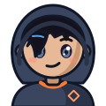

Pedra
Topo
Rafael Nunes, 26. Padeiro, calmo, fala pouco.
Assinatura: Bandana branca com nó · ombros largos · cor: barro

Rastro
Selva
Tainá Duarte, 19. Entregadora, elétrica, grava tudo.
Assinatura: Boné virado + rabo cacheado alto + celular gravando · cor: grama

Vulto
Meio
Caio Arantes, 21. Talentoso, irônico, inseguro.
Assinatura: Capuz do moletom + franja sobre o olho + sorriso de canto · cor: mar
Fagulha
Atirador
Leonardo Okada, 17. Ansioso, perfeccionista, números.
Assinatura: Óculos redondos + topete em faísca · cor: céu
Bússola
Suporte
Marta Ferraz, 23. Organizada, acolhedora, voz de comando.
Assinatura: Headset laranja + coque + pingente de bússola · cor: ouro